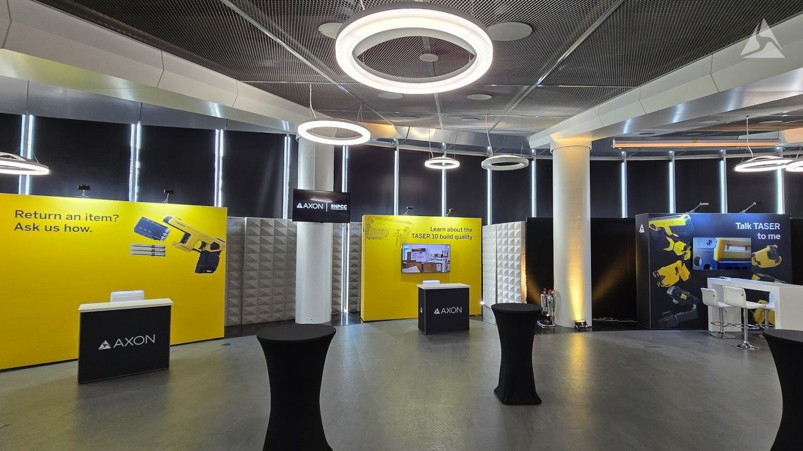
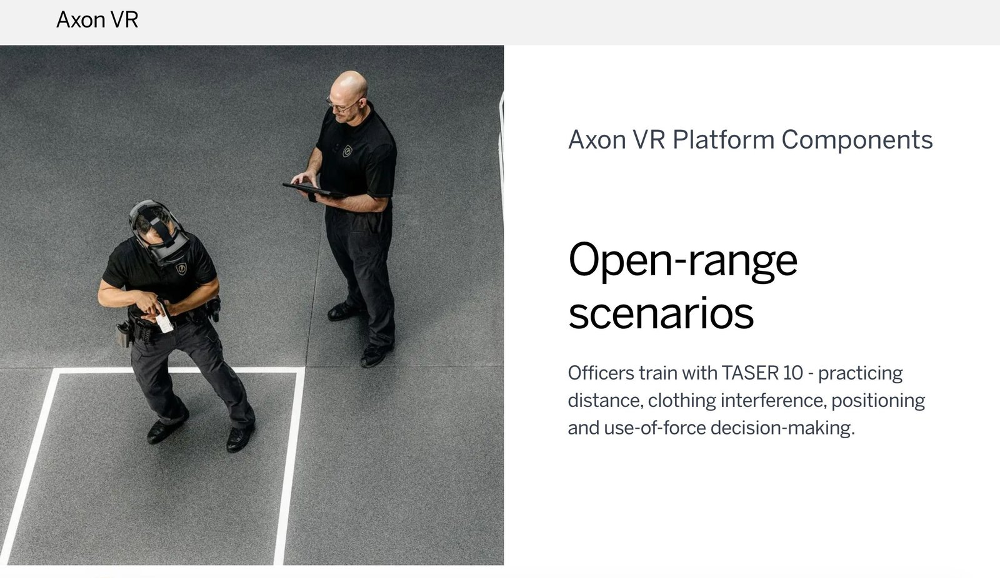
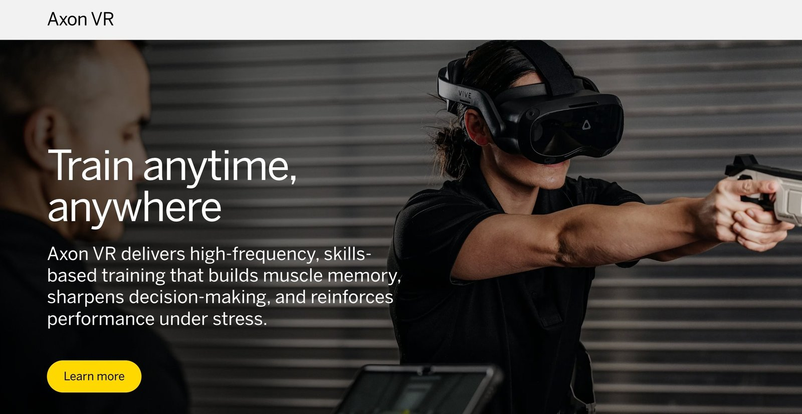
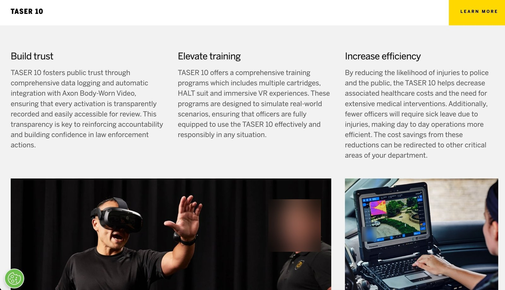
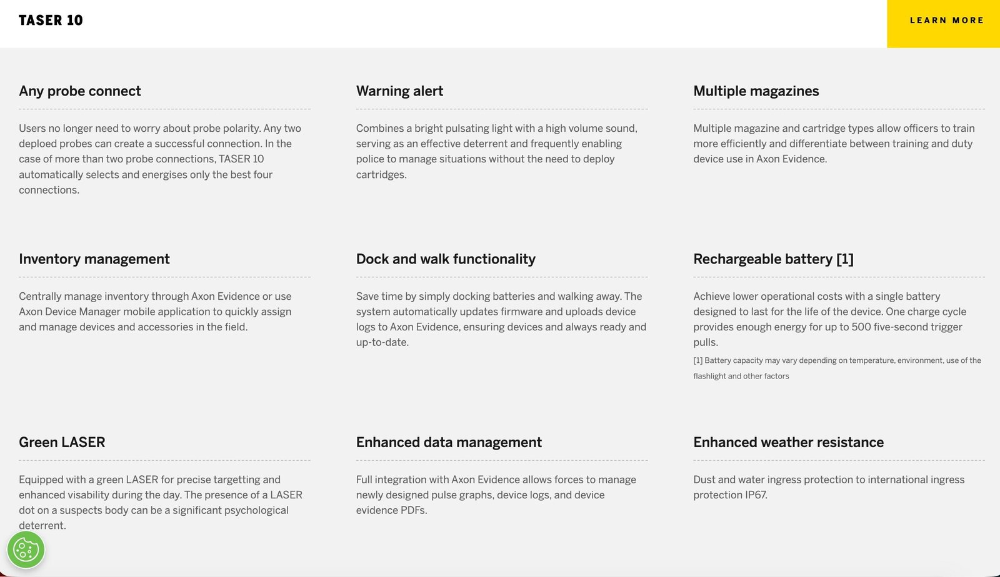
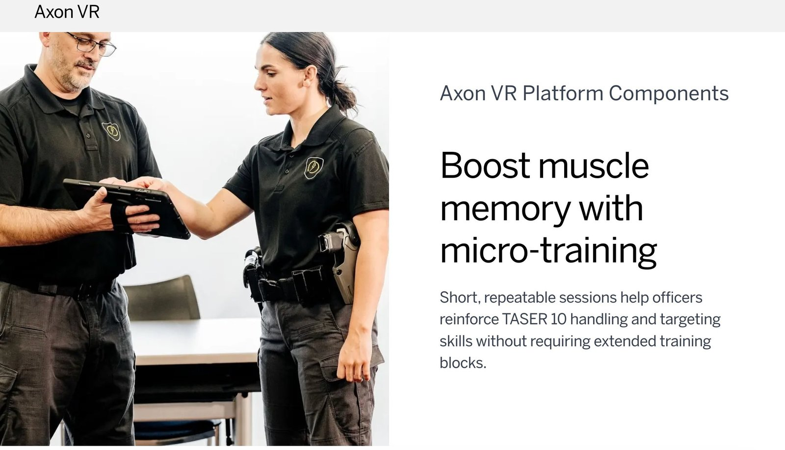

Scaling high-stakes technology globally — through localized positioning, international GTM, and sales enablement.
Across UK policing, TASER was read as a weapon — a hardware device, and nothing more. The real value sat in the software platform behind it: the data, evidence and audit trail that build accountability. That value wasn't reaching buyers, so the differentiation was being left on the table at exactly the moment forces were weighing a move off legacy systems (TASER 7, X2).
My task: reposition TASER 10 from a hardware refresh into a platform-and-accountability case, and give the wider Axon VR training story a single, coherent narrative that buyers and officers could actually trust.
I built a fused TASER 10 + Axon VR solution story and used the Train · Deploy · Analyse framework as its spine — a messaging hierarchy that gave the platform value a language officers understood. I also wrote the foundational sales and messaging assets, including every booth and experience-centre tagline. The whole story went live as a full Axon Experience Centre at the NPCC International TASER Conference, where officers could understand the workflow hands-on, in a realistic environment.
Axon VR positioned as readiness for the real TASER 10 — building muscle memory and confident handling before the field.
The device in context — framed around officer and public safety, not just capability specs.
The platform layer — data, evidence and audit reframed as the accountability case that justifies a force-wide transition.



I led the messaging and copy for the TASER 10 product story — turning a dense feature set into benefits a buyer grasps in seconds, and translating the platform value into language that holds up with skeptical, high-stakes audiences.



I created the global TASER credibility asset below — the kind of proof point that opens doors in international GTM by establishing scale and trust before the conversation even starts.
Global reach
TASER energy devices — trusted across 80+ countries and territories.